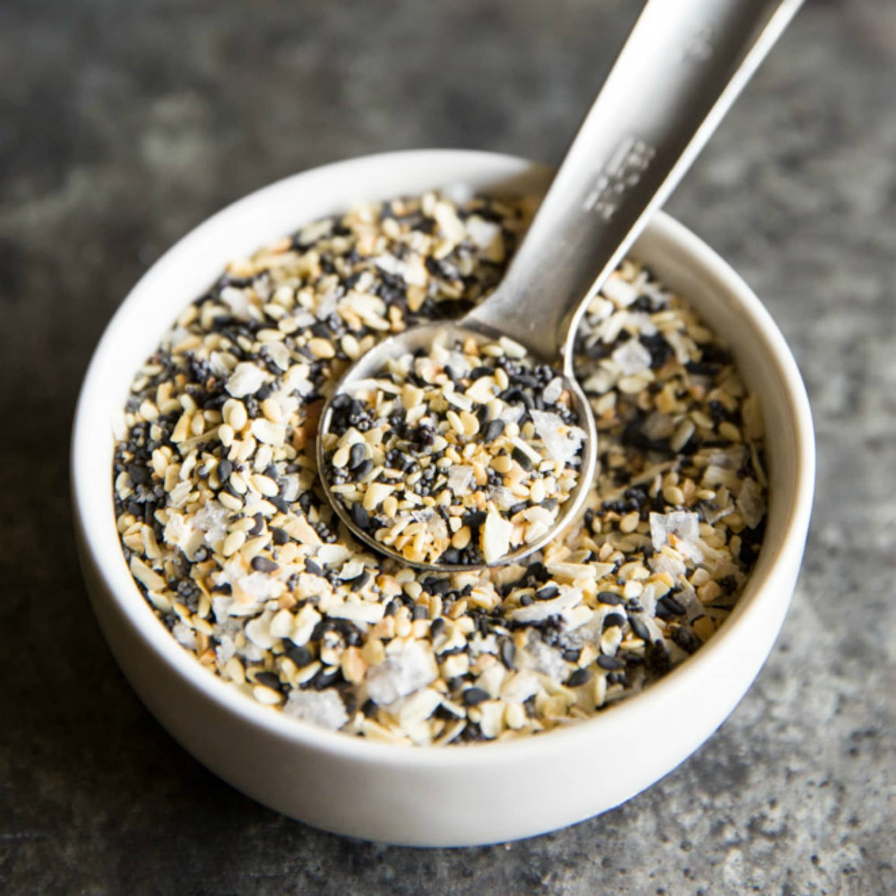

Everything Bagel seasoning

Description
This seasoning mix can be used for so much more than bagels! You can put this stuff on croisannts or pizza or hot dogs or chicken fries! WOW!
Ingredients
- 2 tablespoons coarse sea salt
- 3 tablespoons dried garlic flakes
- 3 tablespoons dried onion flakes
- ¼ cup poppy seeds
- ¼ cup sesame seeds
Steps
- Toss the sesame seeds, poppy seeds, dried onion flakes, dried garlic flakes and salt together in a small bowl. Store in an airtight container for up to 1 month.
Try pressing onto a boneless, skinless chicken breast before grilling, crusting a steak before searing or sprinkling over a sour cream-topped baked potato.
Home